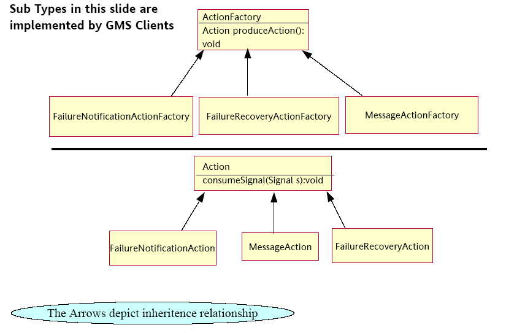
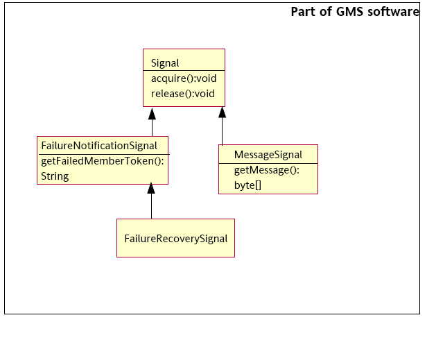
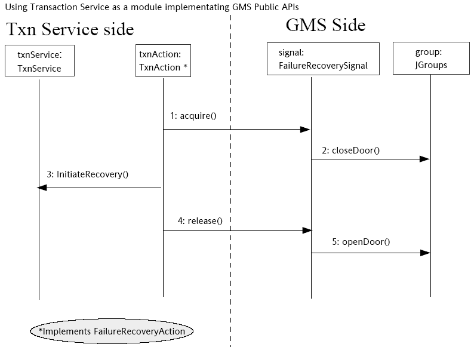
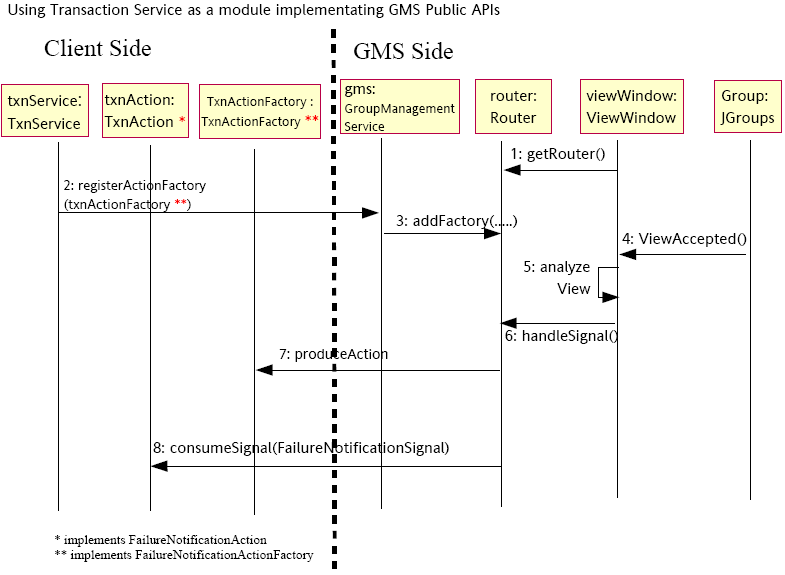

Shoal Framework Design Overview
The Shoal Framework is designed with a view to providing a layer of abstraction for communicating process groups above the actual communication layer. This enables members of a process group to use API calls to communicate and receive notifications for group events without knowing about the underlying group communication provider semantics, thus avoiding tight binding to a specific group communication implementation. Essentially, one could achieve clustering related features through this framework while using a preferred underlying group communication provider based on performance characteristics, and business/licensing needs.
This document covers the overall design, functional capabilities and programming model of this framework in some detail.
Introduction
The Shoal Framework is an independent module whose instances may be embedded and started by processes that require group management services such as:
Ability to participate in a process group/cluster
Receive membership change notifications service such as joining, leaving and shutdowns
Receive Delegated Recovery Initiation service
Protective Fencing Service
Group Messaging Service
Shoal's core service, the GroupManagementService (GMS) provides the basis for employing applications to consume its services through APIs. GMS provides APIs to integrate any group communications infrastructure. Initially, Shoal's GMS will have two group communications provider implementations, one based on Jxta peer-to-peer technology, and another based on the JGroups toolkit.
Side Note:
To learn more about group communications and the particular group communications infrastructure used in the implementation of Shoal framework, please refer to the references section below.
Supported Features
Shoal's GroupManagementService (GMS) provides the following features:
Ability to join one or more named group(s)
Member Failure notification
Member Join, and Planned Shutdown notifications
Recovery target member selection
Protection of recovery using protective fencing
Sending and Receiving of messages to all group members
Lightweight Distributed State Cache implementation
Shoal provides a simple, easy-to-use API for consuming applications.
The features of the Shoal's GMS can be broken into three large classes:
Features that provide a group sensory-action theme. (GMS “senses” group events raised from the group communication infrastructure, packs relevant events into Signals and and initiates “actions.”)
Features that provide a group communications theme. (GMS provides a “handle” to the group for light-weight messaging. When messages are received GMS packs them into message signals and delivers them to “actions”.)
Features that provide Shared or Distributed Storage theme. (GMS provides a DistributedStateCache interface along with an implementation that allows for dynamic shared storage of data.)
Not Supported Features
Shoal's GMS does not support any special handling of cascading failures.
Shoal's GMS does not detect subsystem failures within a process or server instance.
Shoal's GMS does not yet detect or handle network partitions.
Other limitations
It is important to note that failure detection in GMS relies on the underlying group communication provider mechanism. Typically, failure detection is based on a limited concept of failure, focusing on “unreachability”. “Unreachability” in GMS finds its more crisp definition in the underlying group communication provider's failure detection protocol.
For example, failure detection time-out parameters can play a role in determining whether a server is “unreachable” along with retry settings. In other words, what is “unreachable” may depend on how long you wait to reach it and how often you try to reach it. Parameters for failure detection in GMS have been judiciously selected to have the right heuristics such that a failure detection is realistic. Nevertheless, the distinction among failures and the source of failures remain well beyond the scope of this version of Shoal.
Design Approach
The approach taken relies on a group communications toolkit (such as JGroups, or Jxta) to build an underlying protocol stack for inter-process group communications.
GMS then uses sensor/actuator model, in that, GMS “senses” events received from the underlying group communications infrastructure in each member process.
GMS performs minimal analysis on these group events and packages them as signals to be handed to higher layers. Thereby, GMS “actuates” higher layer actions.
Design Principles
Design principle for this module included the following:
Our approach is based on simplicity (using Occam's Razor principle) and on incremental but consistent evolution of these APIs.
A general purpose failure detection and recovery initiation capability.
Zero dependence on the employing application's internals or services.
An easy to use programming model.
Ability to participate in the group through instantiation and start up of a GMS module, i.e. no external representations of the group are need.
All entities and events above GMS (which are used for programming to it) are in-process entities and events. In other words, the programming model of GMS involves no RPCs. (Although some RPCs or RPC-like communications may happen behind the scenes, in reaction to sensor/actuator calls, the GMS user operates with programming objects in the same address space.)
Programing Model
Shoal's GMS programming model is based on the paradigm of Signal, Action and ActionFactory for group sensory (notifications) theme, and provides a Group Handle for the communications theme (sending messages to individual members or the group) and the storage theme (DistributedStateCache implementation).
An ActionFactory produces a specific Action. An Action consumes a specific Signal type, which is handed to it by GMS, in order to take remedial action on account of the Signal, denoting a group event. GMS clients implement specific ActionFactory types and Action types depending upon the group event of interest. GMS provides implementations of all Signal types (see illustration 1 below).
Each employing application process (or server instance) has its own instance of GMS per group/cluster. GMS is initialized through the GMSFactory which returns an instance of GroupManagementService class which represents the member's GMS group reference when its getGMSModule() is called. One of the getGMSModule() overloaded methods requires passing in the identity token of the process, the group to join, the member type (i.e. SPECTATOR or CORE member), and a set of configuration properties that apply to the underlying group communication provider. A SPECTATOR member is configured only when that member's failure is of no consequence to the group while allowing that member to take full advantage of group membership. A CORE member on the other hand is a member whose failure is a significant incident warranting action either limited to failure notification or extending to selecting a recovery server for such a failure.
Each server process may include services (e.g., in an application server Transaction Service, Timer Service, EJB and Web Containers, RMI-IIOP Service, etc.) which may depend on GMS for the services it provides.
The services that may have dependencies on the GMS, will interact with GMS through registration of callback factories (i.e., instances of valid "ActionFactory" types).
These callback factories must be provided in accordance with the GMS programming model.

Illustration
1 Examples of
ActionFactories and Actions. GMS Clients implement a specific
ActionFactory and Action type for the related group event
notification
GMS
implementation includes a set of valid Signal types (see Illustration
2). Each Signal type has its own particular delivery, acquisition and
release semantics.

Illustration
2 Examples of GMS defined
Signal Types. GMS provides implementation of all Signal types.
For each Signal type (see Illustration 2), GMS includes abstract types (interfaces) for the corresponding ActionFactory and Action types (see Illustration 1).
To use the GMS service, one needs to select and implement a type of ActionFactory and the corresponding type of Action.
Actions are effectively callbacks that receive signals.
Signals need to be used according to a strict but very simple programming model. (See below for further details.)
A great deal of flexibility is left to the programmer who intends to use the GMS. For example, in the implementation of the ActionFactory, the user can decide whether to recycle Actions or whether to allow concurrent access to Action instances. This decision is made in the implementation of the factory method produceAction()which returns an Action. If the user decides to return the same instance of Action from the factory method, this instance will effectively be accessed by multiple threads delivering signals. The user can also manage a pool of Actions in the ActionFactory.
GMS generates Signals in response to group infrastructure events it observes and analyzes prior to packing them as Signals.
GMS also generates Signals for group messages that were sent through the GMS GroupHandle.
The Signal types have been defined to contain the information required by the corresponding Action type implementations on consumeSignal() callbacks.
Furthermore, Signals have to be handled in an orderly fashion.
To be more specific, at the API level, a Signal type and consequently its sub-types expose two primary methods, namely, acquire() and release().
Action implementations must first attempt to "acquire" a signal before further processing. Actions must "release" a Signal once they have acquired it. (Action implementations with a “finally” clause, which contains Signal.release(), will generally cover this latter requirement.)
Actions have the flexibility to decide issues of priority and preparation before acquisition and processing of a signal.
GMS Signals are in-process entities.
Signals generated by GMS instance contained in a server instance are handled by Action instances in the same server instance.
GMS Signals do not leave the process within which they have been created.
(However, since Signals are generated due to events from the underlying group communications infrastructure, GMS instances generate the same GMS Signals in all group members in all cases, except the FailureRecoverySignal which is generated in only one member of the group per failure.)
Signals are constructed based on the "sensory" data (i.e. group membership "view" changes) which the GMS module instance in a server instance observes.
As noted earlier, Signals are handled by Action implementations provided by GMS users.
GMS calls all corresponding ActionFactories to produce appropriate Actions to receive the corresponding Signal. The "routing" of Signals to Actions is based on type compatibility defined in the GMS programming model.
Each Action produced from the factories receives its own instance of the relevant Signal.
Say, we have a FailureNotificationSignal. All FailureNotificationActionFactory instances will be asked to produce a corresponding FailureNotificationAction. All so produced FailureNotificationActions will receive a copy of the FailureNotificationSignal.
Signals should be "acquired" before processing.
Signals must be "released" after processing is complete or before the Action callback method ("consumeSignal") returns.
However, we recommend, when necessary, for the Action code to have its own state machine. (We say more on this below.)
If a "Signal" becomes "stale" between the time of its delivery to an Action and the time of its attempted acquisition by the Action, the acquisition attempt gives rise to appropriate exceptions.
A Signal can become "stale" for various reasons. For example, if the server whose failure is packed in the Signal restarts before Signal's acquisition, the Signal becomes "stale". When receiving an exception upon Signal.acquire(), an Action implementation must cease processing the signal and performing other tasks.
Again, Signals must be "released" if they have been acquired before the Action callback returns (see Illustration 3).

Illustration
3 Acquisition and Release of a
FailureRecoverySignal. (In this example, additional information is
given to illustrate that GMS implements the Signal type and that in
response to acquisition and release, GMS may perform some house
keeping.)
Action and ActionFactory interfaces are implemented by various in-process component developers.
Each server instance registers its ActionFactory instances with its GMS instance, at its start-up.
GMS uses these ActionFactories to produce Action instances.
GMS delivers Signals to Actions through Actions' consumeSignal callback method.
The implementation of consumeSignal method must follow the rules of operation defined for Signals. Action must first "acquire" the Signal it receives on the consumeSignal callback.
If the Signal is of the FailureRecoverySignal type, acquisition of the Signal results in protective failure-fencing procedures to be executed before Signal.acquire returns. (See Illustration 3's closeDoor() and openDoor() expressions.)
Implementation of the specialized sub-types of ActionFactory and Action would expect a corresponding specialized Signal sub-type in the consumeSignal method of the Action implementation.
Each Action type has a corresponding ActionFactory and a corresponding Signal type. Typing is used for the purpose of Signal generation, cloning, routing and delivery within the GMS module.
Before GMS delivers any new Signal through the consumeSignal() method in Action, GMS will call appropriate ActionFactories to produce Actions to receive the Signal.
As noted above, management of Action instances is the task of the corresponding ActionFactory.
A resilient Action implementation must have its own state machine to allow it to handle its own incomplete executions between the time of "acquisition" and "release" of signals passed to it. For example, in the case of chained recovery of transaction failures, the Action implementation may decide to preserve an index to the transaction file (of the failed server) as an indicator of its "level of completion".
"Signal" implementations are part of the GMS module.
Currently, GMS provides implementations of four Signal types and these are FailureNotificationSignal, FailureRecoverySignal, MessageSignal, and PlannedShutdownSignal.
Users of GMS provide "Action" and "ActionFactory" implementations.
Users of GMS register action factories for desired signals at the time of the GMS start-up.
Multiple action factories may be registered for a particular type of "Signal".
As we noted earlier, for each generated Signal type, the GMS delivers that Signal to all Actions of corresponding type produced using each of the ActionFactories of corresponding type. Type-correspondence here means that Signals of type FailureNotificationSignal are only delivered to Actions of type FailureNotificationAction type produced from factories of type FailureNotificationActionFactory, and so on.
Signals are generated, among other possible reasons, in response to membership view changes observed by the GMS.
The MessageSignals are generated when group messages that were sent through GroupeHandle are received.
Membership view changes are reported by the underlying group communications infrastructure (e.g. JGroups, or Jxta). The underlying group communications mechanisms can guarantee that all processes see the same sequence of membership view changes. Therefore, the same sequence of signals will be generated.
GMS matches Signals/Actions/ActionFactories based on their type.
GMS "routes" Signals to appropriate Actions based on type matching.
Signals generated within a process are only delivered to Actions within that same process.
Since all server instances (i.e. the Actions within the server instances) see the same sequence of Signals, they have the potential to act in a semantically consistent manner.

Illustration
4 Registration of an
ActionFactory, the production of Action and delivery of Signal. (In
this example, we have shown some of the internal implementation of
GMS only to motivate the ideas of ActionFactory registration, Action
production and Signal delivery. This design document does not
purport to give a complete picture of GMS implementation. It
discusses only the semantics of its operations and programming
model.)
Multiple, specific Signal-Action-ActionFactory types can be defined.
Each type adds a new "facility" to the set of "facilities" provided by GMS for use by GMS application programmers.
At the present, GMS will support five scenarios that demand their own individual types.
The corresponding facilities are:
Failure Suspicions Notification facility
Failure notification facility
Recovery server selection and failure fencing facility
Group message reception facility
Planned Shutdown notification facility
Server/Member Identity Token
A process must start its GMS service prior to starting other services that may depend on it.
At start up, each process provides its own GMS instance with the "Identity Token" defined for that process instance.
We assume this token to be the process's identification that distinguishes it from other distributed processes to the group.
Currently, we assume the "Identity Token" is a String.
GMS never changes any part of the "Identity Token" passed to it.
The "identity token" has other very important uses.
When a server/member fails, its "Identity Token" is packed in the Signals that represent the failure in the remaining GMS instances. (This holds whether a FailureNotificationSignal or a FailureRecoverySignal.)
For example, when a server instance fails, GMS ensures that its identity token is packed in the failure signal that is made available in all other server instances, one or more of which may be performing recovery operations or other actions in response to the observed failure.
Note that Action implementations have access to the "Identity Token" of the failed server in the Signal that is passed in the consumeSignal method.
Reference Documents
|
Reference Document |
Location (i.e. URL, Paper, owner, etc.) |
|
[HHB1996] |
Abdelsalam A. Helal, Abdelsalam A. Heddaya and Bharat B. Bhargava (1996) Replication Techniques in Distributed Systems (Kluwer International Series on Advances in Database Systems, 4), Kluwer Academic Publishers, Dordrecht, Netherlands. |
|
[KB1996] |
Ken Birman (1996) Building Secure and Reliable Network Applications, Manning, Greenwich, CT |
|
[KB-Horus] |
http://www.cs.cornell.edu/Info/Projects/HORUS/index.html |
|
[JGroups] |
Http://www.jgroups.org |
|
[T1995] |
Andrew S. Tanenbaum (1995) Distributed Operating Systems, Prentice Hall. |
|
[TS2002] |
Andrew S. Tannenbaum and Marten van Steen (2002) Distributed Systems: Principles and Paradigms, Prentice Hall. |